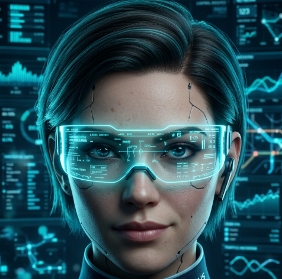
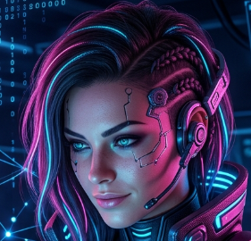
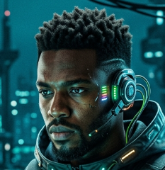

광진물산 OCEAN-NET
SYSTEM STATUS: WEBGL 3D ACTIVE
조업선 연동
4 UNITS
● ACTIVE
자율수송 트럭
5 UNITS
● RUNNING
누적 유통 물량
42.8 TONS
▲ 12.4%
보관창고 가동률
78.5 %
● NORMAL
🚚 DELIVERY CASES
148
⚡ REALTIME FLOW TREND
❄️ COLD-CHAIN TEMP
-18.5 °C

선제발주 에이전트
ACTIVE
과거 발주 패턴 분석 및 예측 제안 대기 중...

재고관제 에이전트
ACTIVE
보관창고 상태 실시간 관제 중...
예측제안 에이전트
ACTIVE
주간 수급 및 가격 트렌드 실시간 분석 중...

재고원장 에이전트
SYNCED
블록체인 분산 원장 트랜잭션 동기화 완료

자율배차 에이전트
OPTIMIZING
차량 배차 및 이송 경로 실시간 최적화 중...